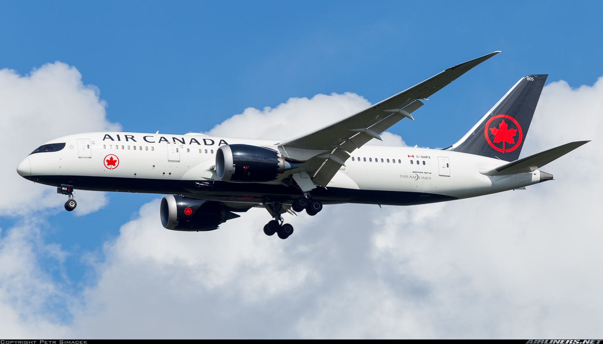
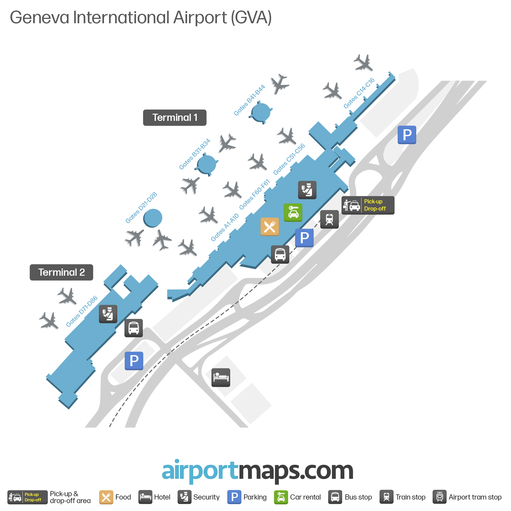
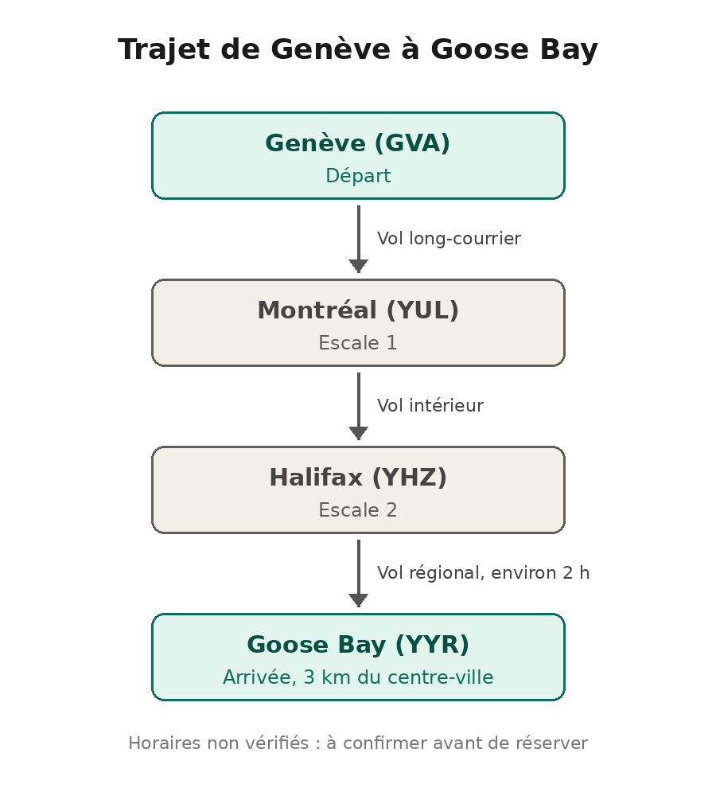

comment aller à Tourismon
De Genève à Happy Valley-Goose Bay : le trajet avec escales Il n’existe aucun vol direct entre Genève et Happy Valley-Goose Bay, au Labrador (Canada). Le voyage se fait obligatoirement avec des escales, et le trajet le plus probable en compte deux.
Le voyage commence par un vol long-courrier de Genève vers Montréal ou Toronto, avec Air Canada ou une compagnie partenaire. Il faut ensuite rejoindre Halifax, qui est la première escale, puis prendre le dernier vol vers Goose Bay. Halifax est la liaison directe la plus fréquente vers Goose Bay, avec environ 16 vols par semaine, et le vol dure environ 2 heures. Ce parcours représente donc 3 vols et 2 escales : Montréal et Halifax.
D’autres itinéraires passent par St. John’s, Gander ou Deer Lake, mais ils sont moins fréquents. Compte une journée complète de voyage, parfois deux si les correspondances sont serrées. À l’arrivée, l’aéroport de Goose Bay se trouve à environ 3 km du centre-ville, et un taxi ou une voiture de location est le moyen le plus pratique pour s’y déplacer.


